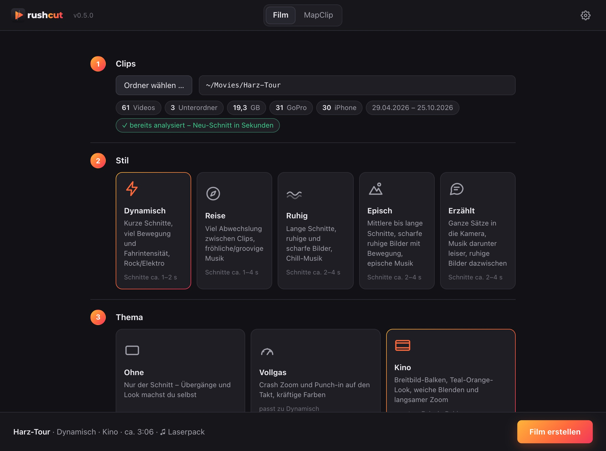
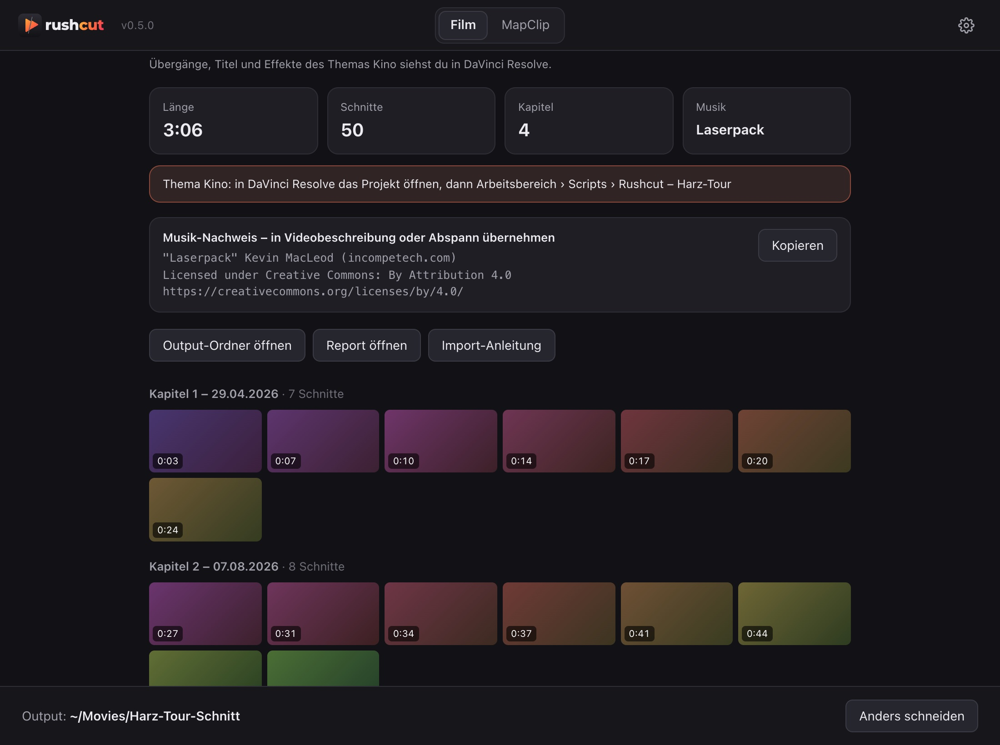
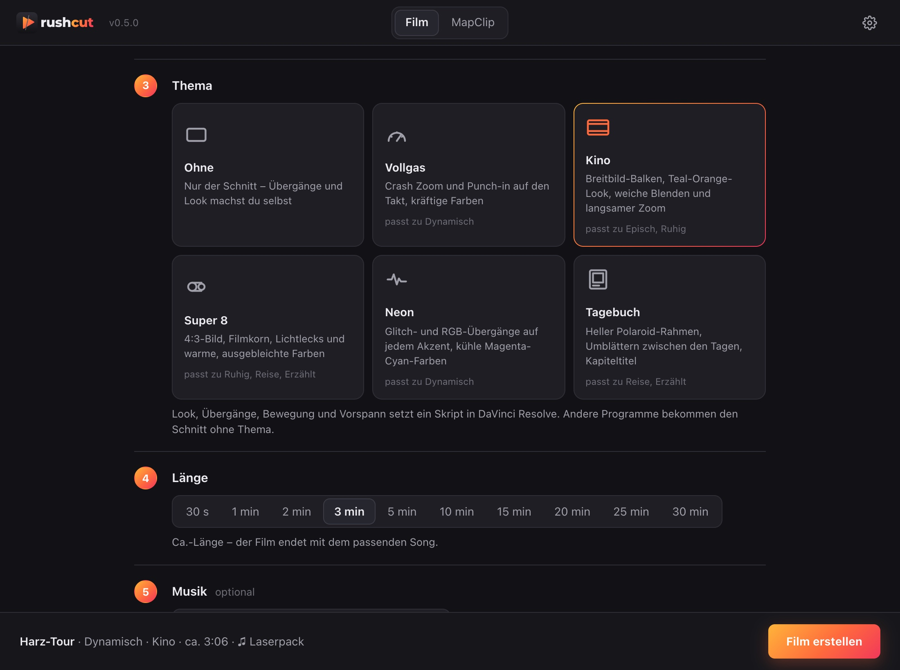
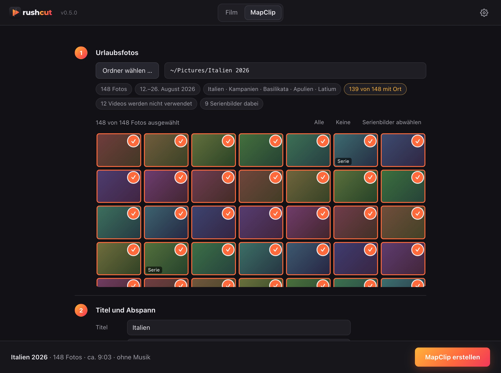

Aus Rohmaterial wird ein Schnittvorschlag – lokal, in Minuten.
GoPro- und Handy-Clips rein, fertige Timeline für DaVinci Resolve, Filmora und EDIUS raus. Kein fertiges Video wie bei Quik, sondern ein Rohschnitt, den du im eigenen Schnittprogramm weiterbearbeitest.
macOS 15+ & Windows 10/11 · keine Uploads · kein Konto · alles in einem Paket

Was Rushcut macht
Abende im Schnittprogramm sichten? Nicht mehr.
Rushcut schaut sich das ganze Material an, sucht die besten Szenen und legt sie auf den Beat – Originale bleiben unangetastet, das Ergebnis ist eine Timeline zum Weiterschneiden.
Clips einlesen
Ein Ordner samt Unterordnern – GoPro, iPhone, Android. Die Originale werden nie verändert.
Szenen bewerten
Bewegung, Schärfe, Belichtung, Verwacklung und Ton – jede Szene bekommt eine Note.
Sprache erkennen
Stil „Erzählt“: Wer in die Kamera spricht, bleibt bis zum letzten Wort drin – die Musik wird darunter leiser.
GoPro-Sensordaten nutzen
Fahrintensität, GPS-Tempo, HiLight-Marker, Gesichtserkennung (Selfies fliegen raus); kopfüber montierte Kameras werden gedreht.
Auf den Beat schneiden
Kapitel nach Aufnahmetagen, Schnittlänge je nach Stil und Bewegung. 30 lizenzfreie Songs eingebaut, oder eigene Musik.
Themen für DaVinci Resolve
Vollgas, Kino, Super 8, Neon, Tagebuch – Look, Übergänge und Titel setzt ein Skript direkt in Resolve.
Timeline ausgeben
FCP7-XML und EDL mit verlinkten Originalclips, Musik, Kapitel-Markern, Report – und einem Vorschau-Video.
MapClip
Urlaubsfotos werden zur Diashow mit Straßenkarte, Route und Kartenflug zwischen den Orten.
So geht’s
In sechs Schritten zum Film
Ein Fenster, sechs Entscheidungen. Ist der Film fertig, gibt es einen kurzen Ping.
- 1
Clips
Ordner wählen oder ins Fenster ziehen – Unterordner werden mitgelesen.
- 2
Stil
Dynamisch, Reise, Ruhig, Episch oder Erzählt – bestimmt Schnittlänge, Bildauswahl und Musik.
- 3
Thema
Ohne oder einer von fünf Looks für DaVinci Resolve – mit Vorschau aus dem eigenen Material.
- 4
Länge
30 Sekunden bis 30 Minuten. Mit Musik endet der Film mit dem Song.
- 5
Musik
Keine, passend zum Stil oder eigener Song. Mit ▶ reinhören, „Anderer Song“ blättert weiter.
- 6
Output
Zielordner wählen – alles für die Weiterarbeit liegt an einem Ort.
Das Ergebnis
Eine Timeline, kein fertiges Video
Im Output-Ordner liegen die Timeline als XML und EDL, die verwendeten Songs, ein Report, eine Anleitung für den Import und ein kleines Vorschau-Video, das du gleich in der App abspielen kannst. Die Clips sind verlinkt – du schneidest mit den Originalen weiter.
V1VideoA1Originalton, abgesenkt und mit V1 verknüpft – Sprechstellen im Stil „Erzählt“ in voller LautstärkeA2Musik, unter Sprechstellen automatisch leiser◆ein Marker je Kapitel

| Programm | Import | Status |
|---|---|---|
| DaVinci Resolve | Datei → Importieren → Timeline → <Film>.xml – mit Thema zusätzlich Arbeitsbereich → Scripts → Rushcut | ✓ getestet |
| Filmora | Datei → Medien importieren → Timeline-XML importieren | ✓ getestet |
| EDIUS 11 Pro | Projekt mit der Voreinstellung aus LIESMICH.txt, dann Datei → Projekt importieren → FCP XML | ✓ getestet |

Themen für DaVinci Resolve
Ein Look per Klick – und alles bleibt änderbar
Mit Thema legt Rushcut ein Skript ins Resolve-Menü. Projekt öffnen, Arbeitsbereich → Scripts → Rushcut – <Film> wählen: Das Skript baut eine neue Timeline mit Farb-Look, Übergängen, Bewegung, Balken, Overlays und Vorspann. Jeder Effekt liegt einzeln in der Timeline.
Läuft auch in der kostenlosen Resolve-Version (getestet mit Resolve 21). Filmora und EDIUS bekommen den Schnitt ohne Thema.
Vollgas
Crash Zoom und Punch-in auf betonten Takten, kräftige Farben, Lichtblitz.
Kino
Breitbild-Balken 2,39:1, Teal-Orange-Look, weiche Blenden, langsamer Zoom.
Super 8
4:3 mit Filmkorn und Lichtlecks, warme, ausgebleichte Farben.
Neon
Glitch und RGB-Versatz auf jedem Akzent, kühles Magenta-Cyan.
Tagebuch
Heller Polaroid-Rahmen, Umblättern zwischen den Tagen, Kapiteltitel.
MapClip · Reisetagebuch
Aus Urlaubsfotos wird ein Film mit Karte
Oben in der App schaltet Film | MapClip um. Aus einem Ordner mit Fotos (JPG, HEIC, PNG) wird eine Diashow mit langsamem Zoom, weichen Blenden und auf Wunsch Musik im Takt. Welche Fotos hineinkommen, wählst du im Raster.
- Straßenkarte unten rechts: wo das Foto entstanden ist, mit Pin, Route und Ortsnamen
- Kartenflug im Vollbild bei jedem Ortswechsel
- Titel und Zeitraum aus den Fotos vorgeschlagen – Land, Regionen, Reisedaten
- Video und Timeline: fertiges MP4 in 1920×1080 zum Verschicken, dazu eine XML zum Weiterschneiden
Rund 40 Fotos sind in etwa einer Minute fertig. Ort und Datum kommen aus den Fotos selbst (GPS, Aufnahmezeit).

Download
Laden, installieren, loslegen
Beide Pakete bringen alles mit – Python, ffmpeg und Musik. Es muss nichts weiter installiert werden.
macOS
macOS 15 oder neuer, Apple Silicon
Rushcut.dmg ladenApp nach „Programme“ ziehen. Noch nicht signiert: beim ersten Start Rechtsklick → „Öffnen“.
Windows
Windows 10 oder 11, x64
Rushcut-Setup.exe ladenInstalliert ohne Admin-Rechte. SmartScreen: „Weitere Informationen“ → „Trotzdem ausführen“.
Fragen
Gut zu wissen
Werden meine Videos oder Fotos irgendwo hochgeladen?
Nein. Rushcut läuft komplett auf deinem Rechner – keine Uploads, kein Konto, kein Tracking. Die Originale werden nur gelesen, nie verändert. Einzige Verbindung ins Internet: Für die Straßenkarte in MapClip lädt Rushcut Kartenausschnitte der Reisegebiete von OpenFreeMap. Das lässt sich in den Einstellungen abschalten – dann gibt es eine einfache Karte aus mitgelieferten Daten.
Worin unterscheidet sich Rushcut von GoPro Quik?
Quik liefert ein fertiges Video und braucht App und Cloud. Rushcut liefert einen Schnittvorschlag als Timeline, den du in DaVinci Resolve, Filmora oder EDIUS frei weiterbearbeitest – mit den Originalclips in voller Qualität.
Brauche ich für die Themen die bezahlte Version von DaVinci Resolve?
Nein. Das Themen-Skript läuft auch in der kostenlosen Version (getestet mit Resolve 21). In Filmora und EDIUS kommt der Schnitt ohne Thema an – Look und Übergänge machst du dort selbst.
Welche Kameras werden unterstützt?
Alles, was gängige Videodateien schreibt – GoPro, iPhone, Android und andere. Bei GoPro-Kameras mit Sensordaten (GPMF) nutzt Rushcut zusätzlich Tempo, Fahrintensität, HiLight-Marker und Ausrichtung.
Darf ich die eingebaute Musik auf YouTube verwenden?
Ja. Die Songs stammen von Kevin MacLeod (incompetech.com) und stehen unter CC BY 4.0 – auch bei monetarisierten Videos. Den Musik-Nachweis legt Rushcut in den Output-Ordner; er gehört in die Videobeschreibung oder den Abspann.
Wie lange dauert ein Schnitt?
Die erste Analyse dauert einige Minuten (bei rund 20 GB Material etwa 3 Minuten). Danach ist ein neuer Schnitt mit anderem Stil, Thema, Länge oder Musik in rund einer Sekunde fertig. Das Vorschau-Video braucht nur wenige Sekunden je Minute Film.
In welchen Sprachen gibt es Rushcut?
Deutsch und Englisch – nach Systemsprache, umschaltbar in den Einstellungen. Das gilt auch für Report, Anleitung und Ordnernamen im Output.